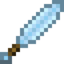

Крижаний меч
Крижаний меч — це зброя, яку можна знайти в Палацах Аврори. Скрафтити не вийде. Надає цілям ефект Обмороження III на 10 секунд, сповільнюючи їх. Наносить 7.5 оодиниць шкоди, що трошки сильніше за діамантовий меч. Але, на відміну від діамантового, у крижаного дуже маленька міцність. Його можна буде полагодити на ковадлі, використавши твердий лід.
- Міцність: 32
- Шкода: 7.5
- Швидкість атаки: 1.6
- Зачаровуваність: 5
- Відновлюваний: ні
- ID: twilightforest:ice_sword
